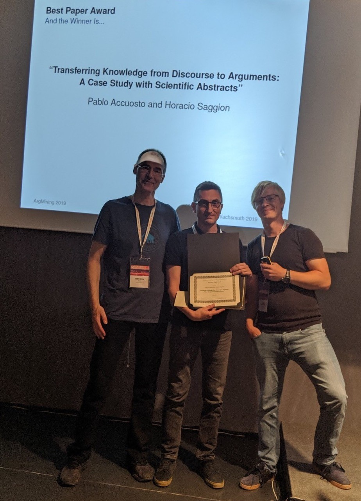

Keynotes

Program
| 08:40–08:50 | Opening Remarks [slides] |
| Session 1 (Henning Wachsmuth, Elena Cabrio) | |
| 08:50–09:50 | Keynote: Schemes for Legal Argumentation [slides] |
| Giovanni Sartor and Marco Lippi | |
| 09:50–10:10 | Segmentation of Argumentative Texts with Contextualised Word Representations [slides] [paper] |
| Georgios Petasis | |
| 10:10–10:30 | A Cascade Model for Proposition Extraction in Argumentation [slides] [paper] |
| Yohan Jo, Jacky Visser, Chris Reed and Eduard Hovy | |
| 10:30–11:00 | Coffee Break |
| Session 2 (Benno Stein) | |
| 11:00–11:20 | Dissecting Content and Context in Argumentative Relation Analysis [slides] [paper] |
| Juri Opitz and Anette Frank | |
| 11:20–11:40 | Aligning Discourse and Argumentation Structures using Subtrees and Redescription Mining [slides] [paper] |
| Laurine Huber, Yannick Toussaint, Charlotte Roze, Mathilde Dargnat and Chloé Braud | |
| 11:40–12:00 | Transferring Knowledge from Discourse to Arguments: A Case Study with Scientific Abstracts [slides] [paper] |
| Pablo Accuosto and Horacio Saggion | |
| 12:00–12:30 | Poster Lightning Talks [slides] |
| All poster presenters | |
| 12:30–14:00 | Lunch Break |
| 14:00–15:30 | Session 3: Demo and Posters |
| demo | The Swedish PoliGraph: A Semantic Graph for Argument Mining of Swedish Parliamentary Data [poster] [paper] |
| Stian Rødven Eide | |
| Towards Effective Rebuttal: Listening Comprehension Using Corpus-Wide Claim Mining [poster] [paper] | |
| Tamar Lavee, Matan Orbach, Lili Kotlerman, Yoav Kantor, Shai Gretz, Lena Dankin, Michal Jacovi, Yonatan Bilu, Ranit Aharonov and Noam Slonim | |
| Lexicon Guided Attentive Neural Network Model for Argument Mining [poster] [paper] | |
| Jian-Fu Lin, Kuo Yu Huang, Hen-Hsen Huang and Hsin-Hsi Chen | |
| Is It Worth the Attention? A Comparative Evaluation of Attention Layers for Argument Unit Segmentation [poster] [paper] | |
| Maximilian Spliethöver, Jonas Klaff and Hendrik Heuer | |
| Argument Component Classification by Relation Identification by Neural Network and TextRank [paper] | |
| Mamoru Deguchi and Kazunori Yamaguchi | |
| Argumentative Evidences Classification and Argument Scheme Detection Using Tree Kernels [paper] | |
| Davide Liga | |
| The Utility of Discourse Parsing Features for Predicting Argumentation Structure [poster] [paper] | |
| Freya Hewett, Roshan Prakash Rane, Nina Harlacher and Manfred Stede | |
| Detecting Argumentative Discourse Acts with Linguistic Alignment [poster] [paper] | |
| Timothy Niven and Hung-Yu Kao | |
| Annotation of Rhetorical Moves in Biochemistry Articles [paper] | |
| Mohammed Alliheedi, Robert E. Mercer and Robin Cohen | |
| Evaluation of Scientific Elements for Text Similarity in Biomedical Publications [poster] [paper] | |
| Mariana Neves, Daniel Butzke and Barbara Grune | |
| Categorizing Comparative Sentences [poster] [paper] | |
| Alexander Panchenko, Alexander Bondarenko, Mirco Franzek, Matthias Hagen and Chris Biemann | |
| Ranking Passages for Argument Convincingness [paper] | |
| Peter Potash, Adam Ferguson and Timothy J. Hazen | |
| Gradual Argumentation Evaluation for Stance Aggregation in Automated Fake News Detection [poster] [paper] | |
| Neema Kotonya and Francesca Toni | |
| 15:30–16:00 | Coffee Break |
| Session 4 (Manfred Stede, Benno Stein) | |
| 16:00–16:20 | Persuasion of the Undecided: Language vs. the Listener [slides] [paper] |
| Liane Longpre, Esin Durmus and Claire Cardie | |
| 16:20–16:40 | Towards Assessing Argumentation Annotation - A First Step [slides] [paper] |
| Anna Lindahl, Lars Borin and Jacobo Rouces | |
| 16:40–17:25 | Special Event |
| Moderated by workshop chairs | |
| 17:25–17:30 | Best Paper Announcement |
| Workshop chairs | |
| 17:30 | Closing Remarks [slides] |
Best Paper Award
An award was given to the best paper, published in the workshop. The award came with a gift of US-$ 500, sponsored by IBM, the company behind Project Debater. Thanks to IBM for this great support! The winner of the best paper award is: Transferring Knowledge from Discourse to Arguments: A Case Study with Scientific Abstracts by Pablo Accuosto and Horacio Saggion
